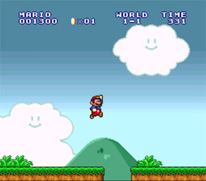

Super Mario All-Stars es un videojuego creado por Nintendo para su consola Super Nintendo Entertainment System (Super NES) en 1993. En sí mismo no fue un videojuego nuevo, sino una recopilación de la saga de Super Mario lanzada para NES.  Super Mario All-Stars llevó estos clásicos de la NES al mundo de los 16 bits, brindándoles una muy mejorada gráfica de vivos colores y un sonido estéreo, además de la posibilidad de ir guardando el avance a medida que se pasaban los mundos. Estaban incluidos los juegos Super Mario Bros, Super Mario Bros.: The Lost Level, Super Mario Bros 2 y Super Mario Bros 3. Al año siguiente fue incluido Super Mario World. El recopilatorio vendió 10,55 millones. En cuanto a notas GamePro le dio un 100 y Nintendo Power un 81,5.